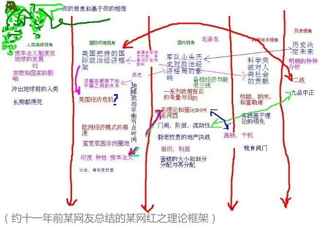

“你们还是另请高明吧，我实在也不是谦虚”，茨维特科·茨维特科维奇直接回绝了面前这帮形迹可疑的家伙，“我一个塞尔维亚东正教徒，怎么就成了‘反东正教贱种塞尔维亚通’了呢？”
“茨先生何出此言？”自称李瓦塔的油头粉面飒爽美少年满脸堆笑，“公爵求贤若渴，诺维萨德虚位以待吖！”
“李先生太客气了”，茨维特科面无表情的唠嗑，然后盯着对方，用怪异的口音挑衅，“嗤，刚波宁”。
“你对同胞就这个态度？”自称米克罗什的家伙不怒自威。
“你们可不算是同胞吧？”茨维特科面无惧色，右肩膀一缩，把手腕缩进袖子里往下一伸，坐在椅子上略微附身，脸上全是嘲讽，“给几位爷请安”。
“我们也把德意志人叫成‘北佬’的”，自称费伦茨的家伙不动声色，把话题岔开。
“还是费先生通情达理”，茨维特科竖起大拇指称赞，“有您几位盯着，我过去了能干嘛？”
“伏伊伏丁那可是一国两制高度自治，内政由塞尔维亚人自己说了算”，姓名风格类似的弗拉德·弗拉德斯库搭话，“公爵也是经过三轮选举才上台，他的党在议会是少数”。
“哪个国？”茨维特科言简意赅的只反问了这一句。
“你宁可拿着奥特曼的良民证当亡国奴，也不打算奋起反抗异族侵略者么？”霍查转进如风。
“如果没有我们奋起反抗”，茨维特科的目光在面前五张脸上扫来扫去，“你们怎么能趁火打劫吞了波斯尼亚呢？”
“还有黑塞哥维那”，李瓦塔补充，“并且不是我们，而是他们”。
“一朝天子一朝臣吖”，茨维特科听到这里就把话头挑明了，“您五位搭档倒是很默契”。
“草台班子而已”，弗拉德没否认，“我们实在也不是谦虚”。
“等下巴挂了再说吧”，茨维特科以拖待变，“现在咱们又不接壤”。
“好”，米克罗什一锤定音，谈判到此为止，“上菜吧”。
“嗯？”茨维特科一愣，“几位客官真的惦记着照顾小店生意？”
“科班出身的火系法师，居然毫无上进心”，费伦茨摇头感叹，“只想当个烧烤厨子”。
“直说‘缩卵怂货窝囊废’就得了，我习惯了”，茨维特科无所谓，然后在商言商，“接下来，本店将为几位客官送上花家私房菜特色精品料理，敬请品尝”。
“要么不来，要么就十五个一起来”，茨维特科看见第一个人进门就知道有的忙了，“彼得，搭把手”。
“十六个”，范翗翷纠正，坐在吧台不动，“我也是客人吖”。
“你也知道是你招来的吖”，茨维特科抱怨，抬头发现一队黑制服中间多了个白长袍，“哟，真的是十六个”。
来人没说话，自己动手搬桌子，五张方桌拼成长条，十五个黑皮坐在远离吧台的同一边，白袍坐在前面的圆桌旁，直面吧台内外的俩人。
“多了仨”，范翗翷看这个造型开始吐糟，“稍安勿躁，断头饭这就准备好”。
“飞翔的荷兰人”，白袍说话了，“还是那么嘴欠”。
“雕虫小技难登大雅之堂，在下这一根棒槌能入得了马王爷的三只眼”，范翗翷反唇相讥，“也算祖上积德了”。
“彼得，开工了”，茨维特科招呼，然后开始擀面，每擀出一张面饼，就往天上一扔。
“一人供仨早当家”，范翗翷顺口称赞，还是坐着不动，那些飞天面饼浮在空中慢慢飘动，逐渐变色，散发出香气。
“哪次你也没快过我吖”，茨维特科参与唠嗑，对其它三十二只眼放射出的光芒视若无睹，“不信就试试”。
“试试就试试”，范翗翷嘴上毫不示弱，甚至按照当前流行的文艺理论，夸张的喊出招式名称，“风刃！”
一片片牛肉飞上天。
“再懒也得动手了吧？”茨维特科看着范翗翷终于站起来了，往夹好碎肉和生菜的面饼里挤酱汁，“魔法不是万能的”。
“划不来而已”，范翗翷早知道茨维特科也知道计算成本收益，类似的对话好多次了，每一次都乐此不疲，“这道菜叫什么来着？”
“尅八部”，茨维特科也有默契，配合范翗翷旁若无人的故意说给旁人听。
“各位久等了”，范翗翷挥手，一堆盘子飞过去各就各位，“欢迎品尝本店特色料理，卡舒吉”。
白袍脸色变了。
“这位客官身体不舒服吗？”范翗翷故作惊讶，“还没来及‘病从口入’就准备碰瓷，不太好吧？”
“祸从口出”，白袍恶狠狠的盯着范翗翷，“恶有恶报，时候未到！”
“说最狠的话，挨最毒的打”，范翗翷似乎真的是有恃无恐，继续惹是生非，“本店规矩想必各位都知道了，前堂后厨只有一个人，客官们想吃什么能吃什么，自己说了不算，一律由店长乾纲独断”。
“别说得那么霸道，我还要做生意呢”，茨维特科接茬捧哏，“虽然本店并非清真馆子，但是也会考虑到绿客官的传统风俗习惯”。
“当然店长的意见还是很重要的嘛”，范翗翷继续甩俗套包袱玩烂梗，笑容可掬的面对白袍，“听说过绿人不吃塞斯黑，那么阿其那您吃不吃？”
“不吃！”白袍大怒。
“听见了么？二爷？”范翗翷招呼茨维特科，这是仅限一小撮充沛着闯劲的小伙伴们内部使用的昵称。
“茨维特科维奇先生”，黑皮当中有人说话了，“您的厨艺确实精湛，只不过交友不慎”。
“卿本佳人，奈何做贼”，茨维特科念了两句诗，“听见了么？彼得？”
“第二基地主席”，范翗翷似乎谐音梗玩上瘾了，“革命不是请客吃饭”。
“所以才要把一切不稳定因素扼杀在萌芽状态吖”，白袍冷静下来了，“你似乎过于自信了”。
“傻了吧，爷会飞”，范翗翷使用固定短语回复，然后夸张的招呼茨维特科，“二爷你听见了么？他们要群殴！十六个打我一个！”
“你自己惹出来的事”，茨维特科没抬头，就能感觉到周边气流涌动，范翗翷似乎就在台风眼当中，“这次再把店面打烂了，你全赔”。
“说好的两肋插刀呢？”范翗翷抱怨，没回头就能感觉到燃素正在聚集，茨维特科身上的能量密度迅速升高。
“真不愧是位面之子”，白袍言不由衷的称赞，虽然表面上没有任何异象，但是通过氪金眼镜可以观察到这二位已经分别链接了气元素和火元素位面，于是双手紧握，十个戒指随时可以激发，耳环、项链、隐藏在头巾下的金箍，也已经进入待机状态准备就绪，自保有余，但是十五个奴才都是添头，真打起来恐怕没把握，“贵店的生意经也是特立独行”。
“不是东风压倒西风，就是西风压倒东风”，茨维特科话里有话，“或者店大欺客，或者客大欺店，人在江湖身不由己”。
“好”，白袍一锤定音，今天的扫黑除恶反恐防暴专项斗争到此为止，抓起清真肉夹馍几口吃完，“结账！”
“不收库鲁斯皂罗特古拉什”，茨维特科强调，然后严密的补充说明，“当然更不收帕拉艾克”。
“利率都到百分之二十了”，范翗翷帮腔火上浇油，“这堆废纸，不，破铜烂锡谁要吖？！”
“才百分之十九！”一个黑皮忍不住顶嘴，然后被白袍狠狠瞪了一眼，缩了。
“知道了”，另外一个老成持重的黑皮，默默掏出钱袋，抓了一把拍在桌子上，“够么？”
巴掌挪开，一堆银豆嵌在桌面上。
茨维特科看着范翗翷。
“够了”，范翗翷说，“连赔桌子都够了……还有门”。
“打道回府！”白袍一挥手，带人走了，重重的甩上门。
“想起什么了？”茨维特科把银豆从桌面上抠出来攥着，看到范翗翷面色凝重，就顺口问了一句。
“一个老朋友”，范翗翷简单回答，“缩卵怂货窝囊废”。
“比我还怂？”茨维特科好奇。
“比你还怂”，范翗翷双手一摊，表情遗憾，“劝不动”。
“亲爱的维亚切斯拉夫·鲁道福维奇”，茨维特科按照对等原则展开私人外交工作，“您太客气了”。
“本来以为你会说，我们的关系还没有熟到这个程度呢”，维亚切斯拉夫略感意外，“礼节倒是无可挑剔”。
“我对你们的客套习惯略有耳闻，想必你也对我们有些了解”，茨维特科解释，“我们都知道本来是父称，但早就变成家名了”。
“现在也是父称”，维亚切斯拉夫盯着茨维特科，“货真价实”。
“我爹又不叫茨维特科”，茨维特科话刚出口就觉得不对劲，立刻反应过来，“那你说我的家名应该是什么？”
“茨维特科夫”。
“……”茨维特科太阳穴一跳，略作停顿，盯着对方，皮笑肉不笑，“却不是特地来消遣我？”
“不是”，百无聊赖的范翗翷插嘴，手指头上缠绕着一缕微风，“即便他用肉馅砸你，我也能拦住”。
“有什么唯物主义证据么？”茨维特科对于范翗翷还是信得过的，于是认真的追问态度认真的来人，“总不能随随便便替人认爹吧？”
“勉强算是有吧，即便铁证如山，有了预设立场的你照样信则有不信则无”，维亚切斯拉夫拿出一张纸，“你在大学里，考试稀烂，成绩一塌糊涂”。
“这算什么证据？”茨维特科脸上有点挂不住，“年少轻狂而已，再怎么说，到现在好歹我也混出来了”。
“因为你不是法师而是巫师”，维亚切斯拉夫甩包袱，“难道你还以为自己从小比人聪明还比人努力？”
“竟有这样的事？”茨维特科睁大眼睛，额头亮晶晶的，心里有些动摇，看着范翗翷，企图确认什么东西。
“当然”，范翗翷表示同意这个结论，“我也是巫师”。
“以前你从来也没跟我说过”，茨维特科有些不高兴，“十几年交情了，至于么？”
“因为不忍心吵醒你那自我感觉良好的白日梦吖”，范翗翷对损友毫不客气，然后补充，“我也是前一阵才知道的”。
“那真正的法师应该是什么样？”茨维特科不再怀疑了，只是好奇顺便自嘲，“没有比较就没有伤害嘛”。
“比如我这样毫无天赋的废物点心”，维亚切斯拉夫应景搭腔捧场自嘲套近乎，“又笨又懒理解力差不愿动脑长得还丑”。
“愿闻其详”，茨维特科真的客气了，“这位客官想吃点什么？”
“哟，转性了”，范翗翷讽刺，然后提醒，“能在锅里煮的就行①，他是水系法师”。
“这边的水质不怎么样”，茨维特科有些尴尬，“相关伎俩一直没有锻炼”。
“颠大勺也是半途而废”，范翗翷嘲笑，一点面子也不讲，然后补充，“巫师各个都是扬长避短高材生”。
“那就乱炖吧，有啥吃啥”，随和的维亚切斯拉夫一点不见外，“出门在外没那么多讲究”。
“进化了”，嘴欠的范翗翷伸手招来一口锅，拉过一张凳子，放在三人中间，“人类先发现了火，然后才发明了锅”。
“我有个朋友”，维亚切斯拉夫往锅里放水，开始拉家常，“只需要面包和清水就可以工作②”。
“内卷到这个程度吖”，范翗翷嘴里没好话，“当你只想要一块面包的时候，老板就会认为你不值一块面包，然后就是得寸进尺蹬鼻子上脸极限施压”。
“如果连清水都喝不上呢？”人缘好情商高的维亚切斯拉夫紧跟范翗翷的话头，“或者说明明可以喝清水，老板非得逼着你喝脏水呢？”
“我们代表的就是自我组织的恐怖主义——这话要先说清楚②”，范翗翷说了一句鹅语，并且没有翻译给茨维特科听的意思。
“看来找你陪客是正确的决定”，茨维特科知趣的没有追问。
“你在贝尔格莱德土生土长，不太清楚外面的情况”，范翗翷解释，“百闻不如一见，读万卷书不如行万里路”。
“纸上得来终觉浅，绝知此事要躬行”，维亚切斯拉夫捧场拍马屁，“一看范先生就是身经百战见得多”。
“还是有很多国家……和地区没去过的”，范翗翷谦虚，“比方说斯洛夫兰和斯洛夫斯坦”。
“嗯？”那俩斯拉夫人听了都一愣，茨维特科忍不住开口问，“这都是哪儿吖？”
“这个……在下孤陋寡闻”，维亚切斯拉夫谨慎的搭话，“只听说过斯洛伐克和斯洛文尼亚”。
“名不正则言不顺，于是始终代表了您俩的民族吧？”范翗翷一针见血，“维也纳和布达佩斯虽然经常撕哔，但是有些心照不宣的阴招小动作还是能达成共识的”。
“还真是这么回事”，茨维特科想通了。
“您的意思是说”，维亚切斯拉夫试着猜测范翗翷的思路，“东边也要有动静了？”
“你不知道吗？”范翗翷反问，“权限还没到这个级别？”
“告辞了”，维亚切斯拉夫急匆匆的站起来往外走，出门前忽然想起礼数，“承蒙款待”。
“水还没烧开呢”，茨维特科不知道该说啥好，只能玩梗，“这口锅谁他娘的给背一下？”
“我骗他呢”，范翗翷笑得奸诈，“举一反三触类旁通，一本正经的胡说八道，不信他不上当”。
“他回去就有热闹了”，茨维特科很熟悉损友的性格，摇头感慨，“能与你做朋友，真是祖上积德”。
“这位客官，一点诚意都没有”，茨维特科看着名片，写着“金田汪”还画了个狗头，怎么看怎么像是特地来消遣自己的。
“听党的话跟党走，坚决做党一条狗，党叫咬人就咬谁，让咬几口咬几口”，来人不以为耻反以为荣，“您称呼我为‘高飞’也可以”。
“而这位客官倒是诚意满满，只不过恶意已经跃然纸上了”，茨维特科看着另一张写着“尼什伯爵阿道夫”的名片，“我看这成色，不像是今天早上才印出来的吖”。
“世子阁下”，范翗翷插嘴了，“怎么不去黑山呢？”
“我怎么知道”，蒂罗尔公爵世子阿道夫摊手，“反正都是空头支票，维也纳可以随便慷慨”。
“慷到我们头上了”，茨维特科不怒反笑，“就这样还敢大摇大摆的进城？”
“这已经是最好的结果了，总比在特米什堡服役有前途”，阿道夫叹气，“还是女下巴看我舔得起劲，才会签字”。
“有我帮忙”，高飞指着自己，“一不留神用力过猛了”。
“女下巴好看么？”茨维特科好奇。
俩人没说话。
“为尊者讳”，范翗翷嘴损。
“不表态本身就是最好的表态”，茨维特科心里窝火也帮腔损一句，俩人也没反应，“直说了吧，找我干嘛？”
“又不是作奸犯科，别那么紧张”，高飞假惺惺的示意放轻松，“跑水路运货而已”。
“我可是火～系法师”，茨维特科强调，并且避重就轻，暂时不透露巫师身份，“你们找错人了吧？”
“没错”，阿道夫说，“体制内的火系法师都被军警宪特瓜分了，谁也借不到”。
“这时候想起‘高手在民间’了”，范翗翷讽刺，一点也不在乎是否连茨维特科一起损，“死马当活马医，捡到篮子里的就是菜”。
“就是这样”，高飞坦然承认，又加一句，“我是说我们”。
“都签约停战了，通商口岸都建海关了，也没啥水匪了”，茨维特科质疑，“镖局还缺人手？”
“不是让你去当打手的”，范翗翷提醒，“应该是……烧锅炉吧？”
“又不是国家机密兼宇宙奥秘”，阿道夫和高飞对视一眼，决定说实话，“找了个水系法师，已经答应了”。
“河里还能缺水？”茨维特科一时难以理解，但是想起昨天背锅的事，似乎有点明白了，“那成本可不低吖”。
“为了保证速度和灵活性”，范翗翷提醒，“需要这么大排场保驾护航的货物，价值肯定更高”。
“我需要考虑考虑”，茨维特科知道范翗翷不是无缘无故提醒自己，虽然武德的必要性和充沛性均不相上下，但损友的见识比自己不知高到哪里去了。
“您……”阿道夫明显的表现出焦躁，但是高飞伸手示意，于是后半截话吞回去了。
“还有胃口么？”范翗翷盯着阿道夫，但旁边的高飞开口回答，“有”。
“那就开饭吧”，范翗翷自作主张，“我顺便蹭一顿”。
“串打ち三年”，茨维特科看见整只整只的鸡鸭鹅已经从柜台里飞出来大卸八块了，大批竹签也腾空而起做乱箭齐发状，范翗翷急匆匆的替自己拿主意，或许是馋了吧。
“焼き一生”，范翗翷接口，穿好的肉串已经整齐的排列在空中缓慢的自转，好比开战前各就各位的水师战列，歪头示意茨维特科，“轮到你炫技了”。
茨维特科没说话，默默的刷酱放火，看见阿道夫的脸色越来越难看。
“给爵爷助兴”，范翗翷又不消停了，故态复萌，“下面为您唱个《爱情麻雀》”。
高飞想说什么，但是忍住了。
“叽叽叽叽叽叽这只爱情麻雀再也不见了”，范翗翷的腔调极怪，“爱你的麻雀呀极呀极温柔啊，你爱的麻雀它脾气太暴躁”。
阿道夫腾地一下站起来想动手，但是刚才见到范翗翷露了一手，忍住了。
“我那个麻雀已经飞走了，你那个麻雀为啥赶都赶不跑”，范翗翷变本加厉，“两个爱情麻雀你自个来比较，爱你的那个麻雀要把它当个宝咿！”
阿道夫夺门而出，高飞追了出去。
“两个爱情麻雀咱们只管来比较”，范翗翷也站起来冲出去，“脾气不大好的那个麻雀怎么受得了诶！”
“脾气不大好的那个麻雀一辈子都烦恼诶！”范翗翷站在门外面朝二人撤退方向继续嚎叫。
“脾气不大好的那个麻雀千万不能要诶！”这句声音更大，范翗翷吐气开声的时候都跳起来了，空中明显浮现出冲击波。
茨维特科目瞪口呆的看着门外的范翗翷，这种冲动的表现以前从来没见过出现在他身上，刚才无意识发动了“狮子吼”连他自己都不知道吧，想必世子阁下听得清清楚楚。
“跟着你的那个麻雀才是呱呱的叫诶”，范翗翷没进店，站在门外面对茨维特科，低声唱了最后一句，已经冷静下来的表情有一丝伤感，然后轻轻把门关上，走了。
“我以为你去云游世界了”，茨维特科看着范翗翷进门，有些意外，“来一场说走就走的旅行”。
“这边的热闹才刚开始”，范翗翷的情绪已经恢复正常了，“我是听说人妖出动了才紧赶慢赶往这边赶，还是没赶上，现在撤了你应付得了么？”
“昨天你就撤了，三人份的烤串我自个儿吃到晚上”，茨维特科心里明白只是嘴硬，昨天范翗翷关门走人之前，飞翔的烤串就缓缓降落到托盘里，不像是动辄赌气的甩手掌柜，“要是肉夹馍那次，还不得吃到后半夜”。
“宰了他的心思都有，只不过能不能宰，不以主观意志为转移”，范翗翷没有隐瞒对阿道夫的憎恨，“当年要是宰了他，就成通缉犯了”。
“前一阵你的通缉令还在门外贴着呢，停战了才撕下来”，茨维特科搭话，“你宰了哪个贵种？”
“我又不是刺客，不至于跟盗贼公会抢生意”，范翗翷否认，“两军对垒各为其主，堂堂之鼓正正之旗，一力降十会，傻了吧爷会飞，吔屎啦你！”
“伤害性不大，侮辱性极强，这么拉仇恨划得来么”，茨维特科嘲笑，“不就是雇佣兵么，买卖不成仁义在，低头不见抬头见，将来还做不做生意了？”
“一时手头紧想赚点外快而已，杀人放火这种工作没打算全职”，范翗翷的职业规划不甚清晰，“要不是对面也有个日结薪水的打工仔从中作梗，伤害性足够大了，侮辱不侮辱它们也听不见了”。
“原来是嘴炮侠无能狂怒吖”，茨维特科故意贬低，看那天白袍黑皮面对侮辱的反应，范翗翷对其伤害绝没有这么轻描淡写，“啥时候你去找回场子？算我一个”。
“拿人钱财与人消灾而已，谁会玩命？”范翗翷没往心里去，“你就参考市面上那些叫嚣隳突的‘辅警’‘协管’吧，编制全被贵种占了，自带干粮卖命未必能转正，出事了就负责背锅顶缸”。
“签合同了也是有关部门临时工，蹴鞠俱乐部的球员，外包公司的劳务派遣”，茨维特科总结，“自由职业者反而更轻松，没准将来你们还能合作呢”。
“打完了都交换纪念品和联系方式了”，范翗翷确实有这种心思，“有机会介绍给你认识”。
“荣幸之至”，茨维特科也是跃跃欲试，知道能让范翗翷吃瘪至少是平分秋色的家伙肯定水平不在自己之下，“多个朋友多条路嘛”。
“路是自己选的，慢慢来③”，范翗翷念了一句耳熟能详的场面话，看见茨维特科开始动手准备食材了，“你知道今天谁会来？”
“这个是正经谈生意的，提前预约了”，茨维特科解释，“我也是个诚实劳动合法经营的个体工商户吖”。
范翗翷没说话，互不干涉内政是朋友之间和平共处五项原则之一，耳听着风铃响，眼瞅着有人进门。
“这装潢又土又丑，家具又脏又臭”，来人态度嚣张，就像是中央特派员全方位巡查监视无死角的，“典型的苍蝇馆子”。
“他说什么？”茨维特科心头无名火起，故意问范翗翷，“你给翻译翻译”。
“你这种弱店，并不能竞争过什么人，亦不能在料理史上留下“浓墨重彩的一页”。或者说，你跟‘料理史’毫无关系，留名是不可能了，连个屁都留不下”，范翗翷把克罗地亚－塞尔维亚语翻译成塞尔维亚－克罗地亚语，故意添油加醋，“只有在你自己的幻想中你才能算是个人物，口中的各种理论与分析也只有你自己会去欣赏。你的食客只有你自己，没办法，即弱小又恶臭就是这样了”。
“这位客官言重了”，茨维特科见过狂的，没见过这么狂的，“本店虽然生意清淡，但是回头客还是偶尔会捧场的”。
“底层逻辑是什么？顶层设计在哪里？”来人上来就是业界黑话。
“太君，他……问您准备骗谁的钱，靠什么伎俩骗钱”，范翗翷看茨维特科态度诚恳的看着自己做洗耳恭听状，决定扮演好“塞翻”角色。
“骗？！”茨维特科睁大眼睛，额头亮晶晶的，转向来人，连连摆手，“使不得使不得！”
来人一时语塞。
“至少先打招呼吧？”范翗翷提醒来人，“顺便澄清一下，你的身份到底是甲方还是乙方”。
“你好，我叫瑟雷萨”，来人惜字如金。
“你真不害臊，我叫桜桃小丸子”，范翗翷翻译。
“请你不要用这种腔调”，茨维特科侧耳聆听范翗翷的译文之后正脸回答，表情微妙。
“碰上你我恨不得开枪放炮！”范翗翷不等来人开口就抢先翻译，还伴随着重读音节把脖子向前一探做吐口水状。
瑟雷萨无言以对，之前设想过多种可能性，也有那许多成功案例参照，但唯独没算到范翗翷这个变数，看两人都冷冷的盯着自己，三板斧杀威棒肯定是打不下去了。
一阵沉默，范翗翷盯着瑟雷萨，茨维特科自顾自的忙活。
“上菜吧”，瑟雷萨字斟句酌，按照组织下发的条例当中《迅雷不及掩耳盗铃之势》一章规定的应急处置措施，刚才的事就当没发生过，只要视而不见听而不闻，那就自古以来不存在。
“验货吧”，飘过来一堆飞盘摆满一桌，菜品很多，每份菜量很少，还有一张订单。
“有什么酒水饮料么？”瑟雷萨现在表现得像是普通食客。
“只有焼酎，可以兑果汁，雷蒙或莱姆”，茨维特科表现得像是普通店员，“限定版还能充沛碳酸气”。
“季节限定？”瑟雷萨追问。
“帮厨限定”，范翗翷插嘴，“我在的时候才有”。
“烧酒的供货方？”瑟雷萨继续问。
“隔壁酒吧后院酒窖”，茨维特科回答，“夏天我帮忙蒸馏，出卖劳动力获得的报酬”。
“冬天呢？”瑟雷萨感觉这家馆子的供应链过于奇葩，人财物的流动不能以常理揣测，之前惯用的各种商战手段都很难发挥，自然伴生的话术也萎了。
“放在室外去冻，每天捞浮冰”，茨维特科解释，“到开春自然就浓缩了”。
“想必砍柴挖煤都留着取暖”，瑟雷萨自言自语，终于想明白茨维特科的抓手、亮点、优势、方法论，都在于几乎无限量无成本的燃料供应。
“这个闭环不容易打破吧？”范翗翷讽刺。
“有没有考虑过加盟连锁店？或者提供外卖？”瑟雷萨忽然换用敬语，“我方可以扩展服务范围，还可以协助扩充菜谱，比如凉菜甜点”。
“没有”，茨维特科直接回绝，“这家店的独到之处，就在于顾客的金口玉言总是在简体和敬体之间反复切换”。
未完待续
- ①
- ② 费利克斯·埃德蒙多维奇·捷尔任斯基
- ③